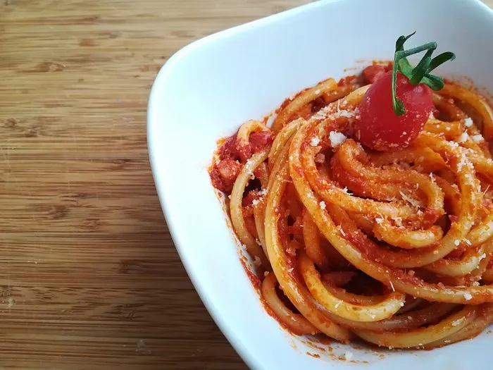
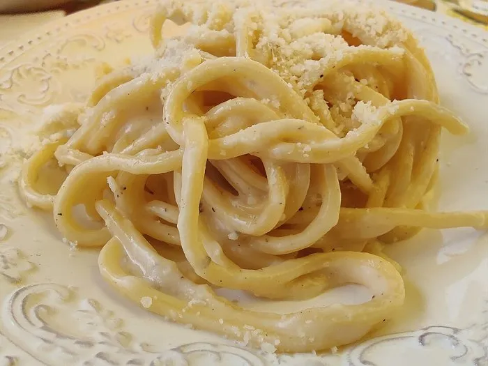

Il nostro menù
Ogni piatto con foto, prezzo, ingredienti e allergeni. In italiano e in inglese.
Antipasti di terra
Fritto Romano
16 €zucchine romanesche, carciofi, mela, patate bollite fritte, basilico, farina di riso, farina 00, birra, sale, olio di arachidi.Allergeni: 1, 5
Gran tagliere di salumi e formaggi laziali per due persone
30 €salame, mortadella, bresaola, prosciutto di Parma 30 mesi, formaggi di capra, pecora o mucca.Allergeni: 7
Carciofo alla romana (stagionali)
15 €olio E.V.O., aglio, vino bianco, pepe, mentuccia.Allergeni: 14
Carciofo alla giudia
15 €olio di arachidi, sale.Allergeni: 5 · *
Scamorza con prosciutto crudo di Parma
18 €scamorza e prosciuttoAllergeni: 7
Antipasti di mare
Fiori di zucca in pastella
9 €mozzarella, alici, farina di riso, birra, olio di arachidi e sale.Allergeni: 7, 5, 1
Filetto di baccalà in pastella su vellutata di ceci
15 €farina 00, sale, pepe, olio di arachidi.Allergeni: 5, 1 · *
Polipetti alla Luciana, serviti al coccio con crostini di pane
18 €olio E.V.O., sale, prezzemolo, peperoncino, aglio, vino bianco, olive, capperi, pane e passata di pomodoro.Allergeni: 1, 4, 6, 8, 13
Sauté di cozze e vongole con pane croccante
20 €olio E.V.O., vino bianco, sale, peperoncino, aglio, prezzemolo, pane.Allergeni: 1
Frittura di totanetti
25 €farina 00, farina di grano duro, olio di arachidi, sale, limone.Allergeni: 1, 5, 13
Tartare di tonno pinna gialla agli agrumi
22 €olio E.V.O., sale, tabasco, pepe, limone. prezzemoloAllergeni: 4 · *
Polpo rosticciato su vellutata di patate viola e porri
26 €olio E.V.O., sale, pepe, rosmarino, polpo, latte, patate.Allergeni: 4, 7
Primi di terra

Spaghettoni alla carbonara
16,50 €uova, guanciale di Sano, pepe, pecorino Romano D.O.P.Allergeni: 1, 3, 7

Strozzapreti all'amatriciana
16,50 €pasta fresca all'uovo, olio E.V.O., pomodoro, guanciale di Sano, pecorino Romano D.O.P., pepe.Allergeni: 3, 1, 7
Tagliatella alla gricia (anche con carciofi + 4€)
16,50 €pasta fresca all'uovo, farina 00, guanciale di Sano, pecorino Romano D.O.P.Allergeni: 1, 3, 7 · *

Tonnarelli cacio e pepe
16,50 €pasta fresca all'uovo, farina 00, pecorino romano D.O.P., pepe.Allergeni: 1, 3, 7
Spaghetti "Gragnano" aglio, olio e peperoncino mantecati al pecorino con verdure croccanti
15 €olio E.V.O., olio di arachidi, carota, zucchina, aglio, prezzemolo, peperoncino, sale.Allergeni: 1
Gnocchi al sugo di coda alla vaccinara
18 €Sedano, carota, cipolla, olio E.V.O., sale, pepe, passata di pomodoro e cacao.Allergeni: 9
Tagliatelle alla genovese di Robertino
18 €olio E.V.O., sale, pepe, pomodoro, cipolla, carota, alloro, sedano, vino bianco, sale, carne di manzo e pecorino romano.Allergeni: 1, 3, 7, 9
Primi di mare
Tagliatella alla luciana
25 €aglio, olio, sale, peperoncino, vino bianco, prezzemolo, olive, capperi, vino bianco e polpo. a penna aggiunto: pomodoroAllergeni: 1, 3, 8, 10, 13, 4

Spaghetti "Gragnano" alle vongole
22 €aglio, olio E.V.O., prezzemolo, aglio, vino bianco, peperoncino, sale.Allergeni: 1, 13, 14
Linguine cozze, pecorino e pachino
18 €olio E.V.O., cozze, datterino rosso, aglio, vino bianco, sale, pepe, peperoncino, prezzemolo, pecorino romano D.O.P.Allergeni: 1, 4, 8, 13, 14
Gnocchi spigola e limone
26 €limone, prezzemolo, aglio, olio, peperoncino, spigolaAllergeni: 1, 4
Secondi di terra
Arrosticini di agnello con patate al forno
21 €olio E.V.O., sale, rosmarino, pepe.Allergeni: 1, 3, 7 · *
Saltimbocca di vitello alla Romana
22 €olio E.V.O., fesa di vitello, salvia, farina 00, prosciutto crudo di Parma, burro, vino bianco, sale, pepe.Allergeni: 3, 1, 7
Polpette al sugo Amatriciano
18 €olio E.V.O., carne di manzo danese, sale, pepe, farina 00, olio di arachidi, sedano, carota, cipolla, parmigiano Reggiano, uova, pane, latte, vino bianco, sale, peperoncino e basilico.Allergeni: 1, 3, 5, 6, 7, 8, 9, 10
Guancia di manzo brasata al vino rosso
35 €Sedano, carota, cipolla, vino rosso, sale, zucchero, farina 00.Allergeni: 1, 8, 9
Trippa Foodish, approvata da Joe Bastianich
15 €Sedano, carota, cipolla, guanciale, olio E.V.O., menta, passata di pomodoro, vino bianco, pecorino e pepe.Allergeni: 1, 8, 9, 10, 7
Tagliata di filetto Danese al rosmarino con patate al forno
35 €olio E.V.O., erbe aromatiche, sale, pepe.Allergeni: 1, 3, 9
Coda alla vaccinara
25 €Sedano, carota, cipolla, sale, pepe, olio, cacao e vino bianco.Allergeni: 1, 8, 9
Secondi di mare
Salmone grigliato su letto di cicoria ripassata
24 €olio E.V.O., aglio, peperoncino, sale, pepe.Allergeni: 4, 14 · *
Filetto di spigola alla Siciliana
28 €olio E.V.O., aglio, peperoncino, farina 00, basilico, prezzemolo, vino bianco, capperi di Pantelleria, olive taggiasche, datterini gialli e rossi, sale.Allergeni: 1, 4, 14 · *
Tataki di tonno pinna gialla con zucchine alla scapece
24 €olio E.V.O., sale, pepe, zucchine romanesche, aceto, menta, aglio e salsa teriyaki.Allergeni: 1, 4, 14 · *
Per accompagnare
Patate al forno
9 €olio E.V.O., rosmarino, aglio, sale, pepe.Allergeni: 14
Patatine fritte
9 €olio di arachidi, sale.Allergeni: 1, 5 · *
Cicoria ripassata
9 €olio E.V.O., aglio, peperoncino, sale.Allergeni: 14
Broccoli siciliani ripassati
9 €olio E.V.O., aglio, peperoncino, sale.Allergeni: 14
Puntarelle e alici
12 €olio, sale, pepe, alici del Cantabrico e aceto di vino biancoAllergeni: 4, 5, 8, 10, 14
Insalata mista
9 €datterino giallo e rosso, carote.Allergeni: 14
Rughetta, scaglie di parmigiano 30 Mesi e pomodori secchi
12 €Allergeni: 7, 14
I nostri dolci
Tiramisù Corsetti 1921
9 €uova, mascarpone, savoiardo, zucchero, caffè, cacao.Allergeni: 1, 3, 7
Torta di mele calda con gelato alla crema
12 €Farina 00, uova, zucchero, burro, mele, cannella, gelato alla crema*Allergeni: 1, 3, 5, 7, 8, 10
Tortino al cuore caldo di cioccolato e panna
12 €cioccolato, latte, burro, zucchero, farina 00, uova.Allergeni: 1, 3, 5, 7, 8, 10 · *
Sorbetto al limone
9 €gelato al limone, zucchero, latte, albumi.Allergeni: 3, 7 · *
Affogato al caffè
8 €caffè, latte, gelato alla crema.Allergeni: 3, 7 · *
Cheesecake ai frutti di bosco
12 €Biscotti digestive, burro, formaggio fresco spalmabile, panna, gelatina e frutti di boscoAllergeni: 1, 3, 7, 9 · *
Delizia tropicale gluten free
12 €Mango, zucchero, farina di riso, cocco, gelatina, olio di semi di girasole, passion fruit e amido di mais*
Ananas
7 €Vini
Frascati Superiore DOCG
30 €calice 8 €
Vini Bianchi LazialiCantina Volpetti · Malvasia puntinata, Malvasia di Candia e trebbiano
Malvasia Puntinata
30 €calice 8 €
Vini Bianchi LazialiCantina Volpetti · Malvasia puntinata
Bellone IGP
32 €Vini Bianchi LazialiCantina i Lori · Bellone
Est Est Est
34 €Vini Bianchi LazialiCantina Stefanoni Foltoni · Trebbiano toscano, malvasia e rossetto
Passerina del Frusinate IGP
35 €Vini Bianchi LazialiCantina Petrucca e Vela · Passerina
Evoluzione Bianco IGP
40 €Vini Bianchi LazialiCantina Casale Cinque Scudi · Blend di uve bianche, prevalentemente autoctone
Vermentino di Toscana
48 €Vini Bianchi ToscaniCantina Tenute Folonari Bolgheri · Vermentino
Chardonnay Toscana I.G.T.
90 €Vini Bianchi ToscaniCantina La Pietra · Chardonnay
Pecorino d'Abruzzo
30 €calice 8 €
Vini Bianchi AbruzzesiCantina Barone di Valforte · Pecorino
Grechetto IGT
35 €Vini Bianchi UmbriCantina Perticaia · Grechetto
Ribolla Gialla DOC
40 €Vini Bianchi FriulaniCantina Luisa · Ribolla Gialla
Pinot Grigio
40 €Vini Bianchi FriulaniCantina Livon Collio · Pinot grigio
Sauvignon Blanc
40 €Vini Bianchi FriulaniCantina Livon Collio · Sauvignon
Chardonnay
40 €Vini Bianchi FriulaniCantina Luisa · Chardonnay
Vermentino Sardegna
35 €calice 8 €
Vini Bianchi SardiCantina Akenta · Vermentino
Cesanese IGT del Lazio
30 €calice 8 €
Vini Rossi LazialiCantina Volpetti · Cesanese
Roma DOC
30 €calice 8 €
Vini Rossi LazialiCantina Volpetti · Montepulciano, Cesanese e Sirah
Petit Verdot IGP
35 €Vini Rossi LazialiCantina Bacco · Petit Verdot
Syrah Merlot 06
32 €Vini Rossi LazialiCantina Casale Cinque Scudi · Sirah, Merlot
Cesanese del Piglio Superiore DOCG
40 €Vini Rossi LazialiCantina Ottone · Cesanese
Merlot IGP
34 €Vini Rossi LazialiCantina Brugnoli · Merlot
Nero Buono IGP
36 €Vini Rossi LazialiCantina I Lori · Nero buono
Nero Buono Monsignore IGP
50 €Vini Rossi LazialiCantina I Lori · Nero buono
Fanum IGP
34 €Vini Rossi LazialiCantina Stefanoni · Blend di uve rosse autoctone
Real Magona Atina DOP
46 €Vini Rossi LazialiCantina La Ferriera · Cabernet Sauvignon, Cabernet franc, Merlot
Cesanese del Piglio Riserva DOCG
50 €Vini Rossi LazialiCantina Tellures · Cesanese
Grechetto Rosso Bio IGP
35 €Vini Rossi LazialiCantina Brugnoli · Grechetto [sic, forse Grechetto]
Montepulciano d'Abruzzo
30 €calice 8 €
Vini Rossi AbruzzesiCantina Barone di Valforte · Montepulciano
Montepulciano d'Abruzzo
40 €Vini Rossi AbruzzesiCantina Colle Sale · Montepulciano
Campo al Mare Bolgheri
80 €Vini Rossi ToscaniCantina Tenuta Folonari · Cabernet Sauvignon, Cabernet franc, Merlot
Baia al Vento Bolgheri
90 €Vini Rossi ToscaniCantina Tenute di Folonari campo al mare · Cabernet Sauvignon, Cabernet franc, Merlot
Chianti Classico di Nozzole
40 €Vini Rossi ToscaniCantina Tenuta Folonari · Sangiovese
Chianti Riserva di Nozzole
55 €Vini Rossi ToscaniCantina Tenuta Folonari · Sangiovese
Cabreo Il Borgo
80 €Vini Rossi ToscaniCantina Tenute Folonari · Cabernet Sauvignon, Cabernet franc, Merlot
Barolo
60 €Vini Rossi PiemontesiCantina Dogliotti · Nebbiolo
Nebbiolo d'Alba
60 €Vini Rossi PiemontesiCantina Dogliotti · Nebbiolo
Barbaresco DOCG
60 €Vini Rossi PiemontesiCantina Dogliotti · Nebbiolo
Primitivo di Manduria Riserva
60 €Vini Rossi PugliesiCantina Pietrapura · Primitivo
Negroamaro di Puglia
40 €Vini Rossi PugliesiCantina Pietrapura · Negroamaro
Cerasuolo d'Abruzzo | Rosè
35 €calice 8 €
Vini Rosati AbruzzesiCantina Friso · Montepulciano
Bevande
Acqua naturale Kangen
4 €Acqua frizzante San Pellegrino
5 €Birra in bottiglia (33 cl)
7 €Calice di vino
8 €Calice di prosecco
8 €Cocktails
12 €Spritz
8 €Bibite analcoliche
5 €Caffè
2,50 €Caffè d'orzo
3 €Cappuccino
3,50 €Classic
12 €Gin tonic, Gin lemon, vodka lemon, rum & cola, Whisky & cola, Pina colada, Negroni, Americano, Rossini
Spritz
8 €Aperol, Campari, Limoncello e Hugo
Birra 33 cl
7 €Ichnusa, Menabrea e Messina
Birra artigianale 33 cl
10 €Giovio rossa {Red}; Greta gluten free {blonde}
Soft drink
5 €Se avete allergie o intolleranze, ditelo al personale prima di ordinare. I numeri accanto a ogni piatto indicano gli allergeni presenti.
Elenco allergeni: 1 Cereali con glutine, 2 Crostacei, 3 Uova, 4 Pesce, 5 Arachidi, 6 Soia, 7 Latte, 8 Frutta a guscio, 9 Sedano, 10 Senape, 11 Semi di sesamo, 12 Lupini, 13 Molluschi, 14 Anidride solforosa e solfiti.
* Il prodotto può essere surgelato se manca il fresco.